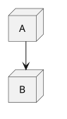
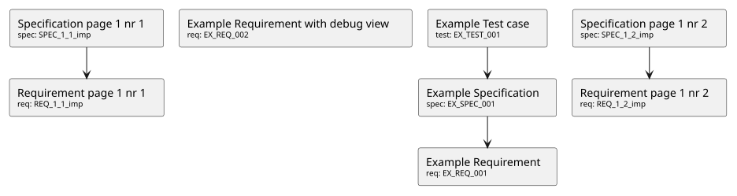

Demo page details
Page source code: index.rst
1
2
3
4
5
6
7
8
9
10
11
12
13
14
15
16
17
18
19
20
21
22
23
24
25
26
27
28
29
30
31
32
33
34
35
36
37
38
39
40
41
42
43
44
45
46
47
48
49
50
51
52
53
54
55
56
57
58
59
60
61
62
63
64
65
66
67
68
69
70
71
72
73
74
75
76
77
78
79
80
81
82
83
84
85
86
87
88
89
90
91
92
93
94
95
96
97
98
99
100
101
102
103
104
105
106
107
108
109
110
111
112
113
114
115
116
117
118
119
120🧰 Basic Example
Sphinx-Needs objects
RequirementExample RequirementEX_REQ_001
A simple requirement used as example. The content supports all kind of Sphinx features, like:
Bold or italic text
Web links, like this google link.
Or even images:
SpecificationExample SpecificationEX_SPEC_001
But also features from integated Sphinx exentions can be used, like this PlantUML generated image from this code

This example test cases also links against an external need:
Test CaseExample Test caseEX_TEST_001
And for sure also all features from Sphinx-Needs, like this needflow:

Sphinx-Needs filtering
Sphinx-Needs debuging
A Sphinx-Needs object using the debug layout to show all set and internal values, which can also be used in all filter strings.
Sphinx-Needs collect and assigns a lot of data automatically for the specific needs, like their location or the headlines, under which it is presented.
RequirementExample Requirement with debug viewEX_REQ_002
Some content
Details
| Status | open |
|---|---|
| Tags | debug |
| Layout | debug |
Imported needs
RequirementRequirement page 1 nr 1REQ_1_1_imp
RequirementRequirement page 1 nr 2REQ_1_2_imp
SpecificationSpecification page 1 nr 1SPEC_1_1_imp
SpecificationSpecification page 1 nr 2SPEC_1_2_imp
External needs
Here are some needs that are external to the documentation, but can still be linked by other needs in this documentation:
REQ_1_1_ext (this is linked in this documentation by Example Test case)